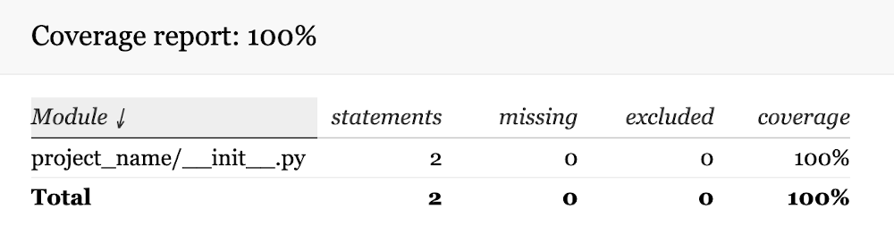
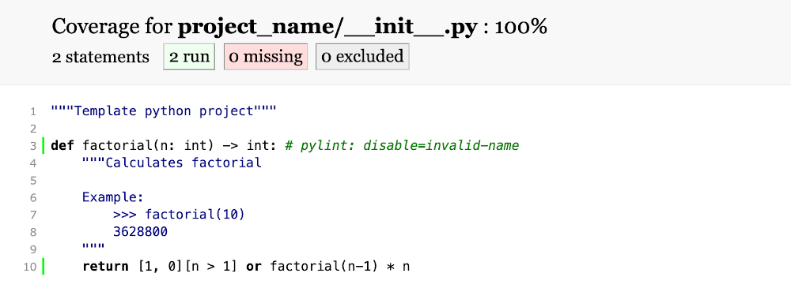
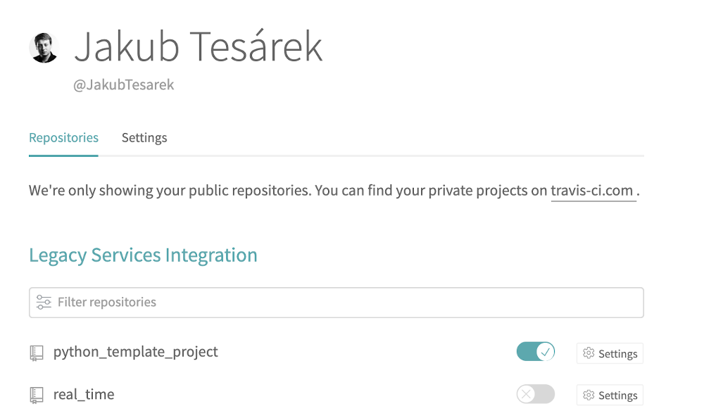
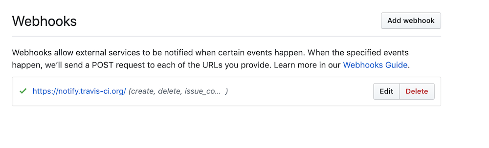
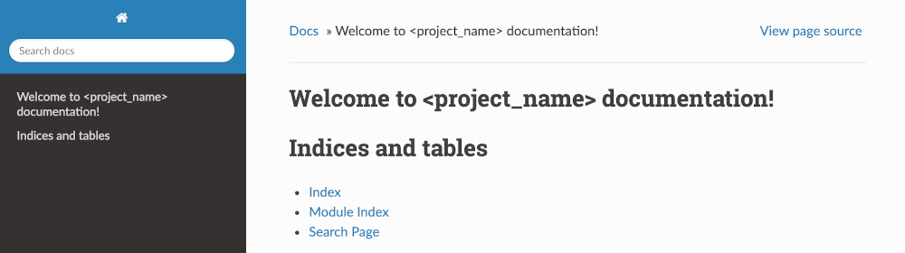
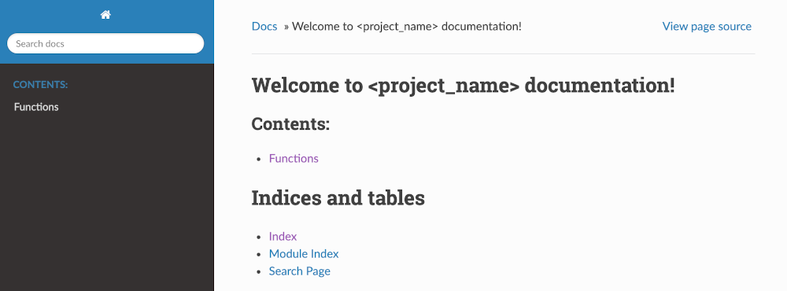
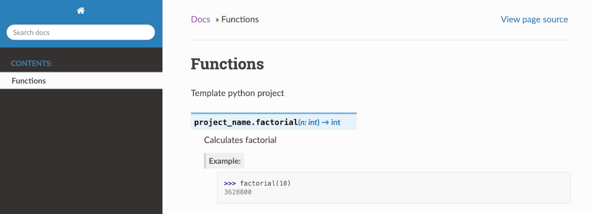
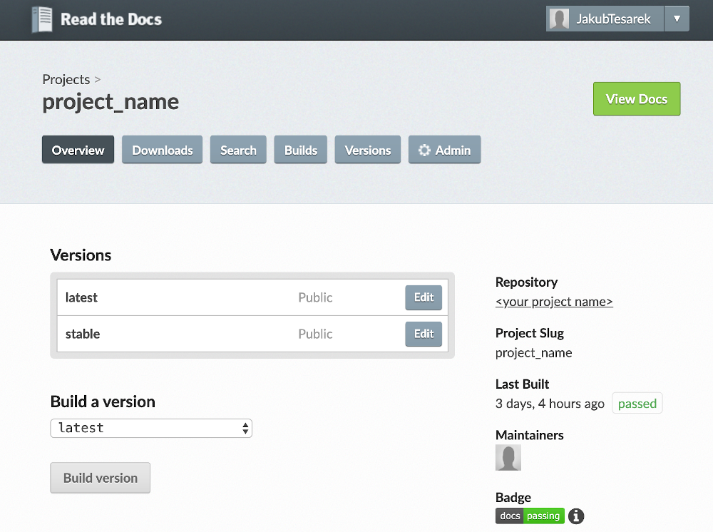

Ultimate template for Python projects
Starting new project is fun but sometimes tedious endeavor. You have a great idea and want to start coding but first you have to setup CI/CD, start writing documentation, figure out how you're going to publish to PyPi all lot of other tasks that just keep you from coding.
I've created a template that can help you get all the annoying details off the table in couple of minutes so you can start working on the next big thing. In this article we'll start new project in Python and also
- Install dependencies
- Run unittests
- Run doctests
- Run a code linter
- Test our type hinting
- Package the source code
- Publish package to PyPi
- Setup a CI/CD process
- Encrypt secrets
- Add cool badges to readme
To do all that we'll use Python template project. You can either fork it or clone and set the upstream to your own repository.
$ git clone git@github.com:JakubTesarek/python_template_project.git
$ cd python_template_project
$ git remote set-url origin git@github.com:<author_username>/<project_name>.gitIf you want to look at a project that uses this template, check out CollTools on my Github.
Project name
Naming is hard. So make sure you come up with a good name for your project. In this tutorial
I'll assume that you project name is something that's also a valid python module name. world_dominance will work. One Billion Dollar$ will not.
You are smart enought to figure out where the name actually matters and adapt accordingly.
First thing we'll have to do is to change name of directory project_name to the actual name. This is the directory where we'll store our code. You can see it
already contains __init__.py and one function. Feel free to change it.
Makefile
The template contains a Makefile that makes it easier to execute some often-used actions like running all test, generating documentation etc.
Before we can use it, we have to open in and set the name of our project on the first line.
proj_dir = actual_project_name
all:
@echo 'test | clean | build | doc'
test:
python -m doctest -v $(proj_dir)/*.py
py.test tests \
--cov $(proj_dir) \
--cov-report html \
--cov-report term \
--cov-fail-under=100
pylint $(proj_dir)
mypy $(proj_dir)
...To list all available commands, just type make in the terminal without any arguments
$ make
test | clean | build | docInstall dependencies
In file requirements-test.txt is a list of dependencies of this project. These dependencies are required to run tests, collect code coverage and generate documentation.
We need to install using pip:
$ pip install -r requirements.txtThis will install them globally using your default Python. I reccommend to setup a virtualenv first.
Running tests
If you successfully installed the dependencies, you can run the tests. The easiest way is to use the included Makefile: $ make test
It will start all the tests. You can also run all them individually.
Unittests
$ py.test tests \
--cov project_name \
--cov-report html \
--cov-report term \
--cov-fail-under=100
=== test session starts ===
collected 1 item
tests/project_name.py . [100%]
---------- coverage: platform darwin, python 3.6.6-final-0 -----------
Name Stmts Miss Cover
----------------------------------------------
project_name/__init__.py 2 0 100%
Coverage HTML written to dir htmlcov
Required test coverage of 100% reached. Total coverage: 100.00%
=== 1 passed in 0.03s ===First it runs unittests located in directory tests/ using pytest
and measures the code coverage.
The argument --cov-fail-under=100 makes sure the tests fail if we don't reach 100% code coverage.
It will also generate html coverage report and store it htmlcov. You can open the htmlcov/index.html
in your browser.


Doctests
Doctest is a module that reads your docstrings and looks for strings that resemble python code. It then executes them and checks if they work as documented.
$ python -m doctest -v project_name/*.py
Trying:
factorial(10)
Expecting:
3628800
ok
1 items had no tests:
__init__
1 items passed all tests:
1 tests in __init__.factorial
1 tests in 2 items.
1 passed and 0 failed.
Test passed.Pylint
Pylint is a code analyzer (linter) for Python. It measures code quality and reports it's score.
pylint project_name
-------------------------------------------------------------------
Your code has been rated at 10.00/10 (previous run: 5.00/10, +5.00)You can modify the rules it uses in .pylintrc. It's not included in this project because we use the defaults.
Mypy
Mypy is also a code analyzer. If you use type hinting, it can check if you define and use all the types correctly.
$ mypy project_name
Success: no issues found in 1 source filePackaging the project
We also want to build the project so other people can install it. We will use setup.py to build both source archive and build distribution.
We have to edit the setup.py and fill in the correct values.
from setuptools import setup, find_packages
import os
def extras_require():
""" Generate list of dependencies from `requirements-test.txt` """
with open('requirements-test.txt') as fp:
return {'test': fp.read()}
def long_description():
""" Generate long description from `README.rst` """
with open('README.rst') as readme:
return readme.read()
def version():
""" Finds current version
We can fill in the version manually every time we build our package. But it's
better to find it automatically. When we'll build the package using Travis,
it will define system variable `TRAVIS_TAG` with the name of the github tag that
triggered the build. We'll use that if it's available.
Otherwise we'll find lastest tag in curreng repository and use it.
"""
version = os.environ.get('TRAVIS_TAG', '')
if not version:
version = os.popen('git describe --match "[0-9]*" --tags HEAD').read()
return version.strip()
setup(
name='', # Replace with actual project name
version=version(),
python_requires='>=3.6',
description='<description>', # Replace with short description
long_description=long_description(),
long_description_content_type='text/x-rst',
url='<github_url>', # Replace with github url of your project
author='<author_name>', # Replace with your real name
author_email='<author_email>', # Replace with your real email address
license='APACHE LICENSE 2.0',
classifiers=[
'Development Status :: 4 - Beta',
'License :: OSI Approved :: Apache Software License',
'Intended Audience :: Developers',
'Programming Language :: Python :: 3.6',
'Programming Language :: Python :: 3.7'
],
packages=find_packages(),
extras_require=extras_require(),
# py_modules = ['module'], # modify if you want to include some module in project root dir
# include_package_data=True, # uncomment if you want to include some non-python files
# install_requires=install_requires(), # if your package has dependencies, add them here
) We can almost build a package from our project for the first time. We just have to create a version tag: $ git tag 1.0.1. This is used by the build script to determine
the version we are building. In the CI/CD section we'll look at better way to do this.
We will use the prepared script from Makefile again.
$ make build
rm -rf *.pyc __pycache__
rm -rf project_name.egg-info build dist
rm -rf .mypy_cache
rm -rf .pytest_cache
rm -rf htmlcov .coverage
Removing everything under 'build'...
python setup.py sdist bdist_wheel
...
adding 'tests/__init__.py'
adding 'tests/test_project_name.py'
adding 'project_name-1.0.1.dist-info/LICENCE'
adding 'project_name-1.0.1.dist-info/METADATA'
adding 'project_name-1.0.1.dist-info/WHEEL'
adding 'project_name-1.0.1.dist-info/top_level.txt'
adding 'project_name-1.0.1.dist-info/RECORD'
removing build/bdist.x86_64/wheelFirst it removes all cache files and coverage reports so we don't accidentally package something we don't want to. Then it creates two distribution packages.
$ ls dist
project_name-1.0.1-py3-none-any.whl
project_name-1.0.1.tar.gzPublishing to PyPi
In this step we will upload our package to pypi.org so other people can install it. If you don't have an account already, go ahead and register.
From local computer we'll use utility called Twine. You can run it like this:
$ twine upload dist/*. It will ask you for your PyPi username and password and upload your package.
In next step we'll replace this manual process with automated CI/CD.
CI/CD
For continuous integration and deployment we'll use Travis. It's free for opensource projects and has good integration with Github.
First you need to create an account on Travis. Simply log in using your Github account and Travis will automatically sync all your repositories. Go ahead and enable you project. 
Travis will create a webhook in you project that will trigger every time someone pushes code to your repository or creates a pull request. 
Travis configuration
In the template project I included a file called .travis.yml that serves as a configuration for the build process.
os: linux
dist: xenial
language: python
python:
- '3.7'
- '3.6'
install:
- sudo apt-get install python-enchant
- pip install -r requirements-test.txt
- pip install .
script:
- make test
- make build
after_success:
- codecov
deploy:
- provider: pypi
username:
secure: <pypi_username>
password:
secure: <pypi_password>
on:
tags: true
condition: $TRAVIS_PYTHON_VERSION = 3.6
- provider: releases
overwrite: true
token:
secure: <github_token>
file_glob: true
file: dist/*
on:
tags: true
condition: $TRAVIS_PYTHON_VERSION = 3.6You don't need to change much in this file, but I'll explain to you the meaning of configuration directives so you can customize the CI/CD process for your needs.
Os and dist specify which operating system we want to use. Python 3.7 is only available on
xenial so you have to use it, if you want to build packages for that Python version.
Language is obviously used to tell Travis what language we are using, and the python section
contains a list of Python versions. Travis will start new build process for each versions.
Install contains a list of bash commands that we need to execute in order to "install" our application. After
this step, the environment should be ready to test and build our application.
Script lists all steps necessary to build our application. Travis runs all the steps sequentially and if one fails
the build process stops. That's why we first run all the tests and only if all of them pass, we attempt to build the application.
At the beginning Travis clones the whole repository including the Makefile so we can use that to run the tests and build.
After_success is a list of steps that run after the build is done. In our case we use codecov module
to report code coverage to codecov.io.
Deploy describes how to deploy our application. We will publish the result package to PyPi and also push the artifacts to Github Releases.
Each section starts with provider which is one of many providers supported by Travis.
The on section list conditions that have to be met in order to start the deploy. We want to trigger deploy only
on commits associated with a git tag. Travis will set the name of the tag in a system variable TRAVIS_TAG at the
beginning so we can be sure we are building and deploying version equal to that tag.
As I mentioned before, Travis runs the whole config file for all language versions we specify. We use two, which means we would also try to deploy the same version twice. Github doesn't mind but PyPi reports an error if we try do release a version that allredy exists. The easiest solution I could find was to simply say I want to deploy only version 3.6.
PyPi module detects file to release automatically but Github needs a little help. Using the file_glob and
file directives we simply release everything in dist directory.
The last thing missing are the secrets to PyPi and Github. We can either set them in the Travis UI or we can paste them to the config file. If we do so, we have to encrypt them because the config file is publicly available. For PyPi put in the username and password you registered in. For Github you can use username/password but reccommended way is to create a dedicated machine user and use his oAuth token.
Encrypting secrets
You can install Travis terminal client but it's quite heavy so I prefer using python implementation of travis-encrypt.
$ travis-encrypt your_username repository_name
Password: ********
Please add the following to your .travis.yml:
secure: W4kXPM12VWxnyWj/QeVw6lua+e ... ANtILgvNSZUvAsiIUl+iQs15x4/ph2dyY=When you encrypt the secrets, place them to appropriate place in .travis.yml
Documentation
Each opensource project needs good documentation. The industry standard for Python projects is documentation generated with Sphinx and published on Read the docs. The first one is a tool that can, among other things, generate html files from rst or markdown. The second one is free hosting for your documentation that can also build your documentation.
Sphinx is included in project dependencies so if you installed them, you should already be able to run $ make doc
which will generate html files in docs/build/html/ and check your spelling. You can open your new documentation
with $ open docs/build/html/index.html.

Adding pages
The documentation is empty so far but adding new pages is very easy. Create new file docs/source/project_name.rst. This
is a file in reStructuredText. You can add any text in this file but we'll
look at how to generate documentation automatically from our source code.
Macro called automodule will insert documentation generated from pydoc of a module given as an argument. Paste this code to project_name.rst
Functions
=========
.. automodule:: project_name
:members:Automodule does all the magic. But there are other macros that can generate documentation.
Before we can generate the new page, we have to add it to the page tree. Open docs/source/index.rst and replace it with this code:
Welcome to <project_name> documentation!
========================================
.. toctree::
:maxdepth: 2
:caption: Contents:
project_name
Indices and tables
==================
* :ref:`genindex`
* :ref:`modindex`
* :ref:`search`When you generate the documentation again, you'll see the new page and link to it on the index.  
Read the docs!
Read the Docs is a platform for sharing documentation of opensource projects. It can automatically build and publish your documentation straight from the Github repository. It's free, all you have to do is to sign in using your Github account. Once you do, import the project from your Github for which you want to build the docs. 
The project docs should start building immediately. If it doesn't, start the build manually with the "Build version" button.
Once it's finished, it will be available at project_name.rtfd.io.
.readthedocs.yml
Remember the Sphinx plugins we installed earlier? We have to tell Read the Docs it should install them too. You can add project
dependencies in Read the docs administration but there's a better way. I prepared file .readthedocs.yml in the
project root that already contains all the necessary settings. If you need to modify how the documentation is built, this
is the correct place.
version: 2
sphinx:
configuration: docs/source/conf.py
python:
version: 3
install:
- requirements: requirements-test.txtBadges

To make you project look more professional, you can add badges that will testify that everything works.
In README.rst I prepared some of them for everything we set up so far. Simply replace the project
name and the path to your repository in the image paths to make them work.
Checklist
Congratulations! You just created and published a Python opensource project.
For your convenience I include a checklist of all the necessary step.
- Get the template
$ pip install -r requirements-test.txt- Rename the source dir
- Change the source dir in
Makefile - Edit default variables in
setup.py - Edit default variables in
.travis.yml - Edit the badge paths in
Readme - Register project in Travis
- Register project in Read the Docs